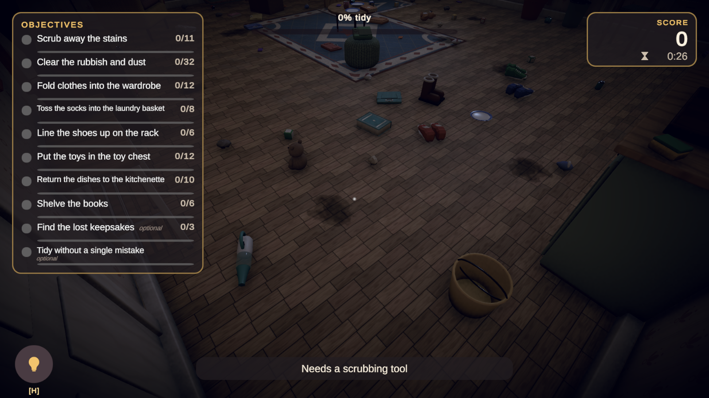
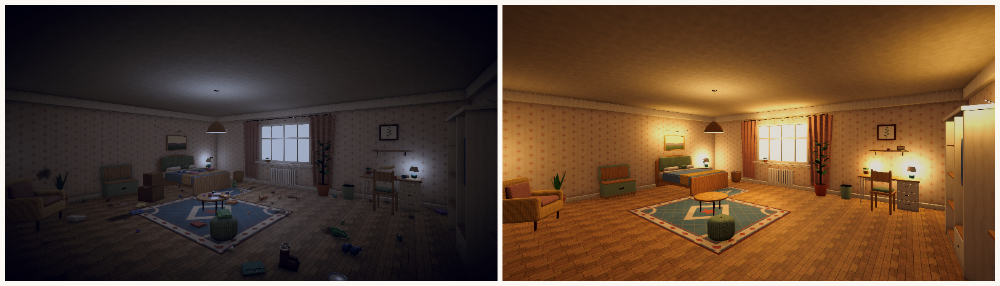
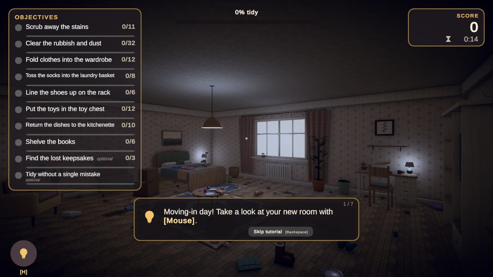

Scoring, Combo, Hints, Cleaning & Before/After
Optional systems that turn correct placements into a satisfying loop. Each one is controlled by a single asset and can be disabled independently.
Scoring
TidyScoreDefinition lists every scoring component with its own toggle, so you can build a relaxed game without penalties or a competitive one with speed bonuses.
| Component | Default | Notes |
|---|---|---|
| Correct placement | Object base score × 1 | Awarded once per object, so re-placing cannot farm points. |
| Combo multiplier | On | Placement points are multiplied by the current combo multiplier. |
| Incorrect placement penalty | −5 | Only with the Accept Incorrect policy. |
| Cleaning / disposed clutter | 15 / 5 | Cleaning also advances the combo. |
| Objective bonus | Per objective | Set on each objective asset. |
| Level complete bonus | 250 | |
| Speed bonus | 2 per second under par | Par time 300 s. |
| No-mistake bonus | 150 | |
| Accuracy bonus | up to 100 | Scaled by correct / (correct + mistakes). |
| Hint penalty | 0 | Hints can also cost score through the hint definition. |
Combo / flow system
Each correct placement or cleaned surface within Combo Window Seconds of the previous one increases the combo. The multiplier grows by Multiplier Per Step up to Maximum Multiplier. Tiers ("Tidy!", "Neat!", "Spotless!", "Immaculate!") fire once when reached and drive stronger feedback: higher pitched chimes, bigger particles and a camera kick. Disable Combo Enabled to remove the mechanic entirely; the HUD hides itself.

Hint system
The hint system picks the nearest object that still needs sorting and that has a free, correct destination, then highlights it with a pulsing outline visible through walls and shows bobbing indicators above the object and the destination. While the player holds an object, the hint points to where that object belongs. If nothing remains to sort it points at the nearest dirty surface.
| Setting | Purpose |
|---|---|
| Hints Enabled | Master switch (players can also disable hints in Settings). |
| Maximum Hints | −1 for unlimited. |
| Free Hints / Score Cost | Hints after the free ones cost score. |
| Cooldown Seconds / Duration Seconds | Pacing. |
| Highlight Object / Destination / Show Arrow | Presentation. |
| Auto Hint After Idle Seconds | Gentle nudge for players who seem stuck. |
Cleaning system
Cleaning is optional and independent from sorting.
- Cleanable surfaces (
TidyCleanable): stains, dust or grime. Players hold Interact while aiming at them. They fade and shrink as they are scrubbed. Set Seconds To Clean, Accepted Methods, an optional Required Tool filter and a Group Id for group objectives. - Cleaning tools (
TidyCleaningToolon an interactive object): sponges or brushes clean faster and in a radius. Enable Collects Clutter to turn the tool into a vacuum that sucks up loose clutter. Method is Scrubbing or Vacuum; Automatic picks Vacuum for clutter-collecting tools. - Clutter: any Tidy Object with Counts As Clutter. Put it in a disposal bin or vacuum it.
- The
TidyCleaningInteractorsits next to the Tidy Interactor on the player camera.
Cleaning methods
Accepted Methods decides what works on a surface. A stain can require scrubbing, dust can require the vacuum, and light marks can accept bare hands. The default accepts everything, so existing levels behave as before.
| Method | Used by |
|---|---|
| Bare Hands | Holding Interact with empty hands |
| Scrubbing | Sponges, brushes and cloths (TidyCleaningTool with Method Scrubbing) |
| Vacuum | Vacuum tools (Collects Clutter or Method Vacuum) |

Before / After system
The transformation of a messy room into an organised one is the emotional payoff of the genre. A TidyTransformationController follows level progress (or a single target's completion) and drives any number of reactors on its children. Each reactor maps a Progress Range through a response curve and smooths the result.
| Reactor | Use |
|---|---|
| Light Reactor | Dim, cool light becomes warm and bright. |
| Volume Reactor | Cross-fades a desaturated "messy" post-processing volume into a warm "organised" one. |
| Toggle Reactor | Swaps sets of objects at a threshold: cobwebs disappear, flowers and fairy lights appear. |
| Gradual Reveal Reactor | Reveals or hides objects one by one as progress grows (e.g. floor clutter vanishing, candles lighting up). |
| Material Color Reactor | Tints renderers through property blocks, optionally driving emission. |

Custom reactors derive from TidyProgressReactor and implement Apply(float organisedAmount).
Satisfying feedback
TidyFeedbackPlayer listens to the interactor, level manager, targets and cleaning, and plays the effects configured in a TidyFeedbackDefinition: an audio cue, a pooled particle prefab and a camera punch per event (pick up, drop, correct, incorrect, rejected, target complete, combo tier, objective, level complete, cleaned, hint). Correct-placement pitch can rise with the combo. Visual feedback built into the systems includes hover outlines, ghost previews, placement arcs, landing punches, neighbour shuffles on shelves, floating score labels, objective check animations and the results star sequence.
Tutorial system
A TidyTutorialDefinition is a list of steps. Each step shows a message (with input tokens such as {Interact} replaced by device-specific keys), optionally highlights objects matching a filter and points at a target, and completes on one of: Press Continue, Timer, Move Player, Look Around, Pick Up Any / Matching, Place Any / Correctly / In Target, Rotate Held Object, Inspect, Drop, Use Hint, Clean Any, Complete Objective. Tutorials play once per save unless configured otherwise, and players can skip them or disable them in Settings.
The tutorial panel works without a mouse cursor: Backspace or the gamepad View button skips the tutorial and Enter confirms steps that wait for Continue. The shortcut is shown on the buttons and can be changed on TidyTutorialView. Restored levels skip the tutorial automatically.
